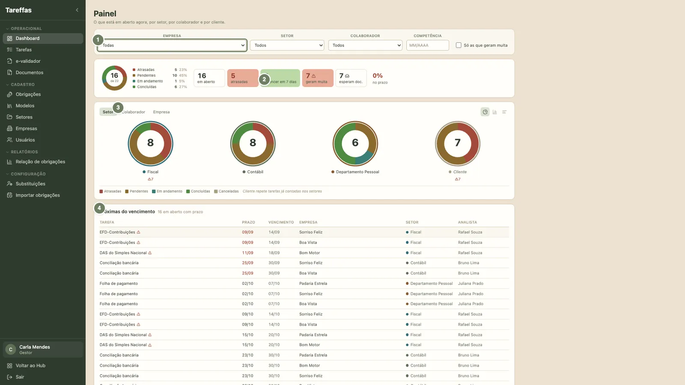
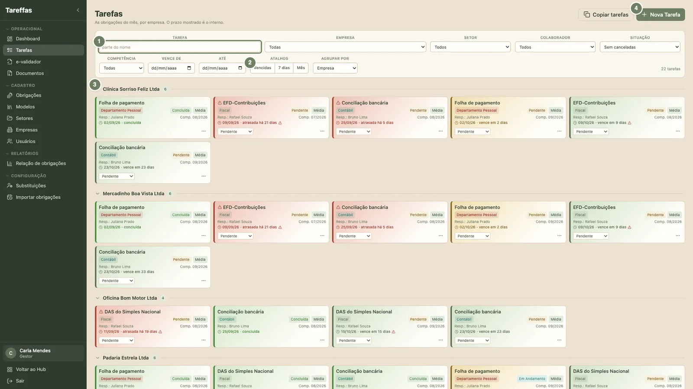
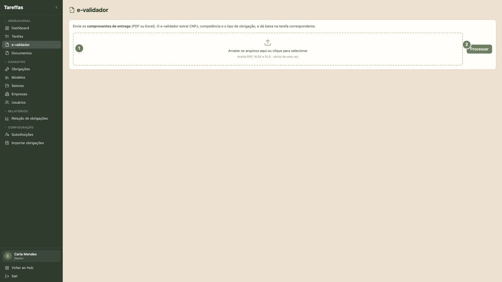
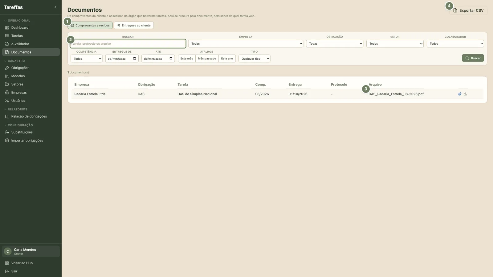

O que o Tareffas faz por nós
O Tareffas é o gestor de obrigações e tarefas da BPS4. Ele guarda, para cada cliente, tudo o que precisa ser entregue todo mês, cria as tarefas sozinho, mostra a cada pessoa o que vence primeiro e dá baixa quando o recibo ou a guia chega.
A tarefa nasce sozinha
Cada obrigação é um modelo que se repete. Todo mês o sistema cria a tarefa de cada empresa atendida, já com responsável, prazo interno e vencimento.
O documento dá a baixa
Recibo, comprovante ou guia entram pelo e-validador. O sistema lê o CNPJ e a competência e conclui a tarefa certa.
O cliente recebe na hora
A guia reconhecida sai por e-mail e WhatsApp com um link. Você vê se o cliente abriu, sem precisar perguntar.
Como ele nos ajuda
| Assunto | Antes | Com o Tareffas |
|---|---|---|
| O que vence no mês | Planilha de cada setor, montada à mão | As tarefas nascem com um clique para todas as empresas |
| Quem cuida de quê | Combinado de boca | Matriz empresa × setor: cada tarefa já sai com dono e supervisor |
| Prazo | Só a data da lei, perto demais da multa | Prazo interno da equipe, antes do vencimento, com cor de alerta |
| Baixa | Alguém lembra de marcar como feito | O recibo no e-validador conclui a tarefa certa |
| Guia ao cliente | E-mail montado um a um, sem saber se abriu | Envio por e-mail e WhatsApp, com registro de quem baixou |
| Férias | Tarefas paradas na mesa de quem saiu | Substituição: as tarefas vão para quem cobre |
| Visão do gestor | Perguntar a cada um como está | Painel por setor, colaborador e empresa |
A viagem de uma tarefa
Acompanhe o cartão da DCTFWeb da Clínica Sorriso Feliz pelas sete paradas do Tareffas. Depois, no fluxo guiado logo abaixo, você faz cada passo com as próprias mãos.
Uma tarefa, sete paradas
Aperte "Começar o passeio". O cartão anda sozinho até a próxima parada e conta o que acontece lá.
Da obrigação cadastrada ao cliente com a guia
Siga uma mesma tarefa do começo ao fim: a DCTFWeb de outubro/2026 da Clínica Sorriso Feliz, uma empresa fictícia do Lucro Presumido. Em cada etapa você faz uma ação e responde uma pergunta. A etapa seguinte só abre quando as duas estão certas.
Você seguiu a DCTFWeb da Clínica do cadastro até o Painel
Cadastro certo, tarefa gerada, acompanhada pela cor do prazo interno, baixada pelo recibo no e-validador e conferida no Painel. É esse o caminho de toda obrigação no Tareffas.
Quem fez o fluxo
Carregando o registro...
| Pessoa | Etapas | Situação | Quando | Respostas erradas |
|---|
Vencimento e prazo interno
Toda tarefa tem duas datas. O vencimento é a data que gera multa: vem da lei (prazo legal) ou do fechamento contábil do cliente. O prazo interno é a data da equipe, sempre antes: é ele que pinta a tarefa de amarelo e de vermelho. Monte uma regra abaixo e veja as datas no calendário. A tela da obrigação faz a mesma conta na linha "Tarefas de...".
Simulação para estudo. Dias úteis contam só segunda a sexta, sem feriado, como o Tareffas faz hoje. A data oficial é a que a tela da obrigação mostra.
Prazo legal
Obrigação acessória com data em lei, igual para todas as empresas. No escritório: Fiscal e ECD/ECF.
Fechamento do cliente
Etapas do processo contábil. Vencem no fechamento de cada empresa: dia 20 no Real e Presumido, 25 no Simples e 13 em alguns grupos combinados com a gestão.
Prazo interno
Padrão do escritório: 7 dias corridos no Fiscal, 3 na Contabilidade, 45 na ECD e na ECF. Nunca passa do vencimento.
A ordem certa dos cadastros
Cada cadastro usa o anterior. Cadastrar fora de ordem faz a tarefa nascer sem dono, sem supervisor ou com a data errada.
Contabilidade, Fiscal, DP, Financeiro, Cliente, cada um com o seu gestor.
Grupo, gestor e convite de acesso.
Regime, segmento, fechamento e quem cuida de cada setor.
O que se entrega, quando, para quem e com qual prazo.
Um documento de exemplo ensina o e-validador.
Uma vez por mês, em Obrigações.
O que cada cadastro faz e o que muda nas tarefas
As telas de quem executa
Painel
A foto da competência: em aberto, atrasadas, a vencer em 7 dias, que geram multa e que esperam documento. Agrupe por setor, colaborador ou empresa para ver onde a fila parou. A lista "Próximas do vencimento" mostra o prazo interno e o vencimento lado a lado.
Tarefas
Cartões por empresa, com a cor do prazo interno. Troque a situação no próprio cartão. No menu do cartão: anexar documento, enviar ao cliente, copiar link de envio, transferir, não se aplica (com motivo) e editar.
| Cor | Quando |
|---|---|
| Atrasada | O prazo interno já passou |
| Vence hoje | Último dia do prazo interno |
| Até 7 dias | Cabe na semana: planeje agora |
| Em dia | Mais de 7 dias de folga |


e-validador
Arraste PDF, XLSX ou XLS, vários de uma vez, e clique em Processar. Para cada arquivo sai um resultado:
| Resultado | O que fazer |
|---|---|
| Baixada | Nada: a tarefa foi concluída |
| Enviada ao cliente | Nada: a guia saiu e a tarefa concluiu |
| Aguardando conferência | Confira CNPJ e competência e envie pela tarefa |
| Sem destinatário | Cadastre e-mail ou telefone na empresa |
| Sem tarefa | Confira a competência; recibo anual de ano parcial se baixa à mão |
| Ambíguo | Ajuste o identificador ou suba um Modelo |
| Envio falhou | Reenvie pela tarefa |
Documentos
Tudo o que entrou e saiu, num lugar só. O filtro "O cliente pegou?" separa quem já baixou a guia de quem ainda não abriu.


As palavras do Tareffas
Nenhum termo com esse nome.
Manual do Tareffas · BPS4 · gestordetarefas.zoaria.com.br · regras do escritório conferidas em 05/10/2026. Telas com dados fictícios.